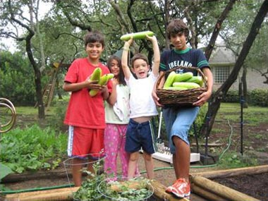

Vegetable Gardens
eating extremely local
Admin section
Here you can modify the info details of your Vegetable Garden's page
Your Vegetable Garden has been registered correctly.

Garden's Name
Garden's History
During the first half of the 20th century, much of the world was at war. Because war is so resource-intensive, many countries asked their citizens to pitch in and contribute. Even our presidents did their part. In 1918, President Woodrow Wilson and First Lady Edith Wilson brought sheep to graze and fertilize the White House lawns in an effort to save manpower, fuel, and chemicals, so they could instead be used in the war. In 1943, the Roosevelts planted a "victory garden" on the White House grounds. A victory garden was a private or community vegetable garden, either in a backyard or public area, where people could grow food for their families and communities. This was done in order to reduce demands on the country’s resources.
Contact Info
The name of the responsible
Email
Phone
Change the Password
New Password
Confirm the New Password
Delivery Offer
Yes, I want to offer delivery to my neighbors
List of Towns for Delivery
Binissalem
remove
Inca
remove
Add
Delivery Price:
.
€
Update the info of your Vegetable Garden